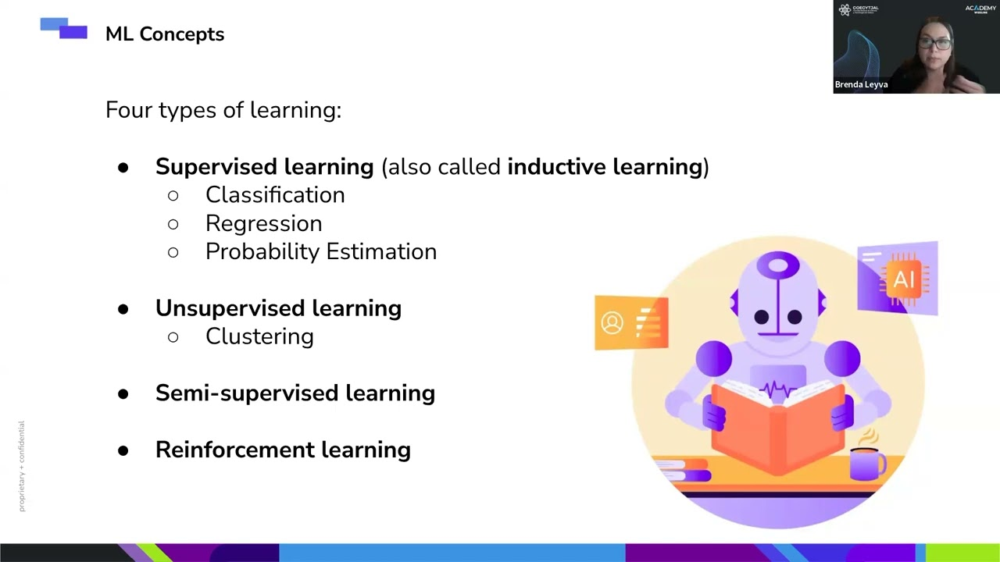
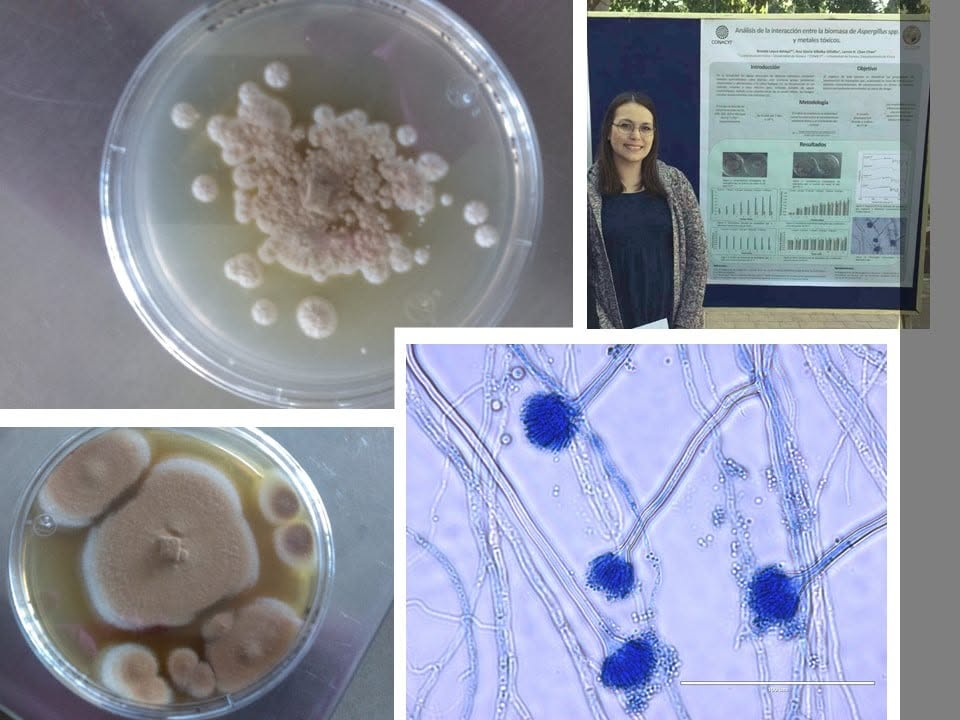

I am an AI engineer/data scientist with experience working as a technical writer
In this site you can find details about my background and projects.
If you are trying to navigate a career change, require specific services,
or want to learn more about these disciplines, you came to the right place.
Feel free to explore my projects and other activities.
Why Multidisciplinary Matters
Throughout my career, having a multidisciplinary background has been one of my greatest strengths. With roots in physics, data science, business, and communication, I’ve found that real progress often happens at the intersection of fields. Whether collaborating with engineers, researchers, or designers, I’ve learned how to translate between perspectives, connect the dots, and contribute to solutions that are not just technically sound but also practical and aligned with broader goals. This cross-disciplinary experience has shaped the way I approach challenges: holistically, creatively, and always with curiosity.
Working on projects that range from machine learning applications to technical documentation and business analysis has taught me that no discipline holds all the answers. My ability to move fluidly between domains allows me to build better tools, write clearer documentation, and support stronger collaboration across teams.
Being multidisciplinary doesn’t just help me keep up, it helps me lead with insight and empathy.
Learning, Teaching, and Collaborations

MLOps Bootcamp Instructor
It was an incredible teaching experience where I served as an instructor for two editions of the program. Our students were industry professionals from a wide range of fields and companies, which made for rich, insightful exchanges and diverse learning dynamics.

Research Assistant
As a physics student, I had the opportunity to collaborate with experienced researchers in the fields of semiconductors and biophysics. My work ranged from fabricating solar cells using experimental materials to cultivating fungi for bioremediation studies. You can find the abstract of my research as published by the Biophysical Journal here.
Technical Writing Academy Instructor
I had the opportunity to serve as an instructor for the Technical Writing Academy at Wizeline, an experience that deepened my connection to writing and sharpened my teaching and communication skills.

CubeSat Orientation (Summer Research Program)
Designed, tested, and implemented Python algorithms and sensor-based tracking systems for nanosatellite orientation during a summer research program at UABC (Mexico).